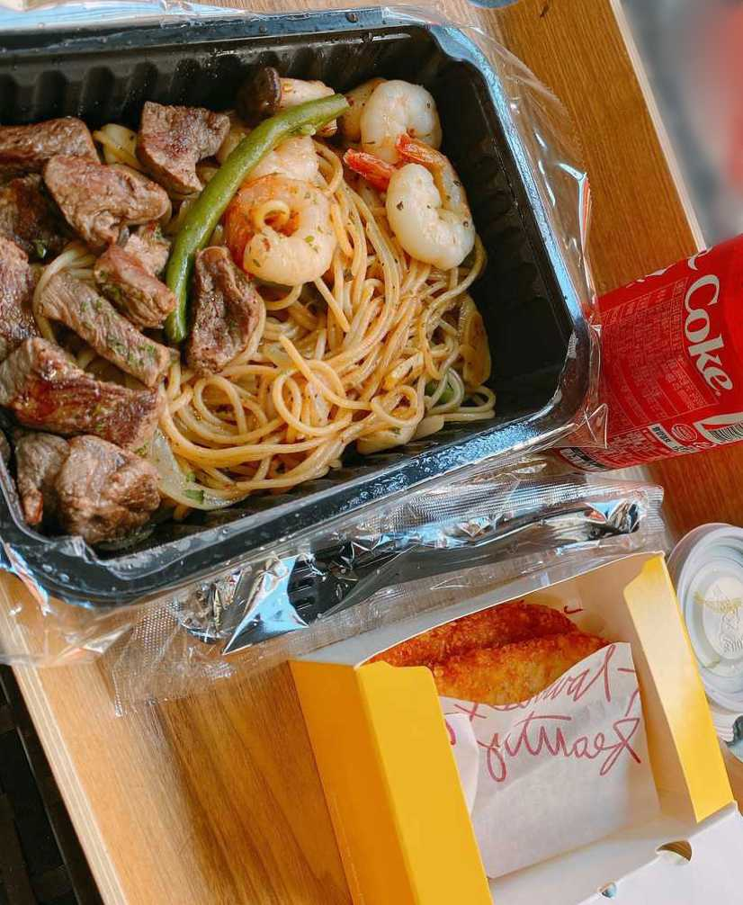

ふぅー久しぶりにご飯の挑戦をしてみた！
いつも、ラーメンかキムチチゲ、ヨーグルト、茹で卵…みたいな感じだから、今日はちょっと何か違うもの食べてみよう！と思って…
ステーキとエビパスタ？？みたいなの
頼んでみたんだけど…
めっっっっっちゃ美味しかった！
私、天才や😃
이호も、ちゃんとご飯食べてね🍚
오랜만에 밥의 도전을 해봤당
항상 라면이나 김치 찌개 요구르트 ...같은 느낌이라서 오늘은 좀 뭔가 다른 거 먹어 보자!라고 해서...
스테이크와 새우 파스타?같은 것
시켰는데 ...
너어어무 맛있었어!
나 천재네 😃
이호도 밥 먹어 🍚